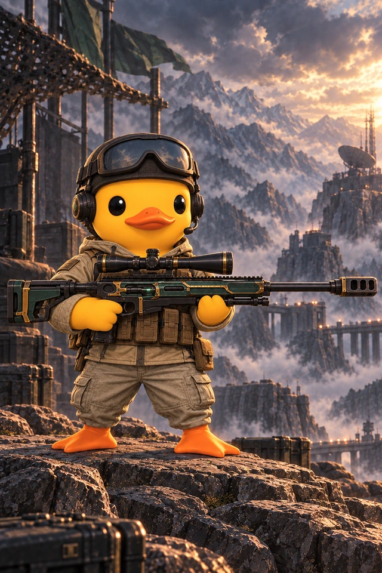
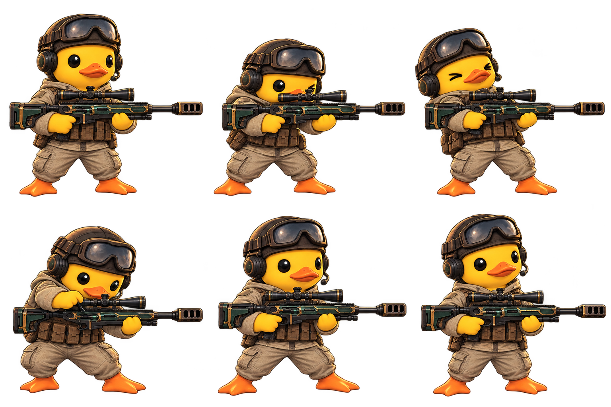
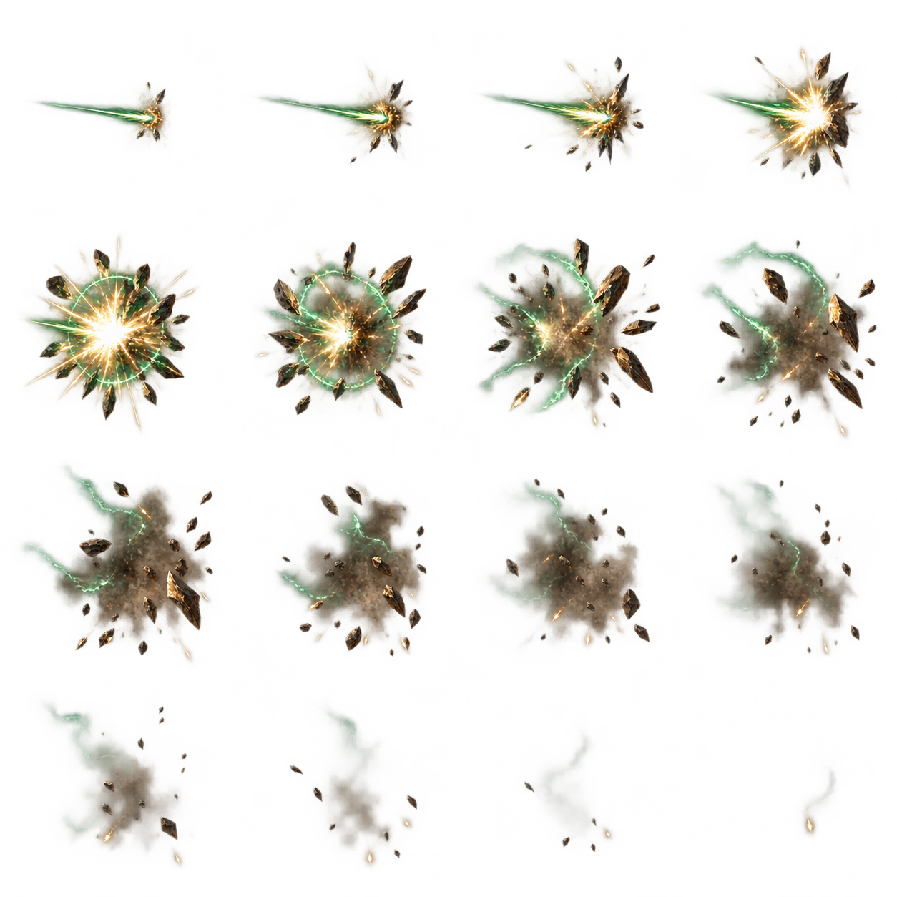

승인 원화 2026.09.26
SS · 후열 저격수
저격 오리꿍
한 발로 꿰뚫는
에메랄드의 사선.
고글을 올리고, 호흡을 가다듬고.
작은 날개에 들린 대물저격총이 적 후열의 핵심을 노립니다.
SS 등급원거리 최상위 화력희귀 등장
에메랄드 대물저격 재생 ↗하이퍼팩 SS 당첨 후 선택 확률 1%
BATTLE SPRITE
흔들림 없는 수평 조준

EMERALD ANTI-MATERIEL조준, 반동,
조준, 반동,
그리고 재장전.
곧은 총열과 견고한 두 날개의 지지. 총의 형태를 유지하며 조준부터 사격 후 복귀까지 이어집니다.
6사격 동작 프레임16탄착 이펙트 프레임
SIGNATURE SKILL
에메랄드 대물저격
적 후열 중 전투 시작 공격력이 가장 높은 대상을 강력한 대물탄 한 발로 저격합니다. 후열이 없으면 전열을 겨눕니다.
재생 대기
전투 시연 준비 중…
후열의 핵심을 향해
준비만 하는 턴 없이 현재 행동에서 발사합니다. 한 발에 집중한 피해와 짧은 재사용 주기로 원거리 화력을 끌어올립니다.
강력한 단일 타격
피해 배율 720%. 방어·회피·보호막·호위에 대응되며, 파편은 추가 피해를 만들지 않습니다.
SS 희귀 저격수
비용 25 · 재사용 2턴. SS 기본 전투력 12만을 유지합니다. 일반 카드 5장과 별도의 용병 슬롯에 편성합니다.
연속 프레임 원본 보기

